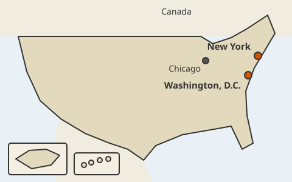

New York und Washington, D.C.
Mit einem KI-Tutor lernen
Ein KI-Tutor erklärt dir diese Seite und hilft dir bei den Aufgaben. Wähl deinen Assistenten:
Mit Claude öffnen Mit ChatGPT öffnen Mit Mistral Vibe öffnen
Du nutzt dein eigenes Konto beim Anbieter. Der Assistent ist kein Angebot von lernapps.net: lernapps liefert nur Inhalte und Aufgaben. Die Wahl gilt für alle Seiten, nur auf diesem Gerät.
Zwei Städte für Mr Hills Klasse
Mr Hill möchte zwei berühmte Städte der USA zeigen. Sophie fragt Jayden um Rat. Vorher eine Frage an dich.
Aufgabe
Lösung
New York
New York ist die größte Stadt, nicht die Hauptstadt.
Washington, D.C. richtige Antwort
Washington, D.C. ist die Hauptstadt der USA.
Chicago
Chicago ist eine große Stadt, nicht die Hauptstadt.
Die größte Stadt ist oft nicht die Hauptstadt.
Das kannst du danach: Du stellst zwei berühmte Städte der USA mit ihren wichtigsten Sehenswürdigkeiten vor. Du sagst, welche der beiden die Hauptstadt ist, und du erklärst, was an ihr besonders ist.
Jayden erzählt von zwei Städten
- Sophie: Hi Jayden! Mr Hill wants us to show two famous cities of the USA. Which two should we take?
- Jayden: New York and Washington, D.C.! New York is the biggest city in my country.
- Sophie: Is New York the capital?
- Jayden: No, it isn't. The capital is Washington, D.C.
- Sophie: What can I see in New York?
- Jayden: The Statue of Liberty is in the harbor. It was a gift from France.
- Jayden: Central Park is a very big park in Manhattan. Millions of people go there.
- Jayden: Times Square is full of lights. It is next to the theaters of Broadway.
- Sophie: And what about Washington, D.C.? What does D.C. mean?
- Jayden: It means District of Columbia. It is not in a state. It is next to Maryland and Virginia, on the Potomac River.
- Jayden: The White House and the Capitol are there. Congress meets in the Capitol.
- Sophie: Is that the same Washington as Washington State?
- Jayden: No! Washington State is one of the fifty states. Washington, D.C. is a city on its own.
- Jayden: On the National Mall you can see the Lincoln Memorial and the Washington Monument. The Smithsonian museums are free.
| Englisch | Deutsch |
|---|---|
| the capital | die Hauptstadt |
| the harbor | der Hafen (Jayden schreibt amerikanisch, britisch harbour) |
| a gift | ein Geschenk |
| the theater | das Theater (amerikanisch, britisch theatre) |
| full of lights | voller Lichter |
| District of Columbia | Hauptstadtbezirk, kein Bundesstaat |
| Congress | der Kongress (heute das Parlament der USA) |
| the Capitol | das Kapitol (Gebäude des Kongresses) |
| free | kostenlos |
Verstehen, belegen, meinen
Aufgabe
Lösung
Richtige Antwort: Die Aussage stimmt nicht.
D.C. ist ein eigener Bezirk, kein Staat.
Aufgabe
Lösung
Richtige Antwort: Statue of Liberty – ein Geschenk aus Frankreich im Hafen; Central Park – ein sehr großer Park in Manhattan; Times Square – voller Lichter, neben den Theatern am Broadway; Capitol – hier tagt der Kongress
Drei Orte liegen in New York.
Aufgabe
Lösung
Zeile 2
Zeile 2 nennt die größte Stadt.
Zeile 7
Zeile 7 handelt vom Central Park.
Zeile 13
Zeile 13 handelt von Washington State.
Zeile 4 richtige Antwort
Dort nennt Jayden die Hauptstadt.
Zeile 4 nennt die Hauptstadt.
Offene Aufgabe
Welche der beiden Städte möchtest du lieber besuchen? Schreibe zwei bis drei Sätze auf Englisch, zum Beispiel mit „I would like to visit … because …“.
Tipp
Schau in die Zeilen 6 bis 14.
Eine gute Antwort enthält:
Lösung
I would like to visit New York because I want to see the Statue of Liberty. I think Central Park is also very interesting.
Zwei Städte auf der Karte

© CC-BY-4.0Schemakarte, nicht genau nach Maßstab. Norden ist oben. Die zwei orangen Punkte sind die Städte dieser Seite, der graue Punkt ist Jaydens Stadt.
Merke
Die capital ist die Stadt, in der die Regierung eines Landes arbeitet. Sie ist nicht immer die größte Stadt. Mit dem Wort biggest sagst du, was am größten ist: The hall is the biggest room in our school. Und mit free sagst du, dass etwas nichts kostet: The library is free.
D.C. schreibt man mit zwei Punkten.
Übung
Aufgabe
Lösung
White House
Es steht in Washington, D.C.
Times Square richtige Antwort
Er liegt neben den Theatern am Broadway.
Lincoln Memorial
Es steht in Washington, D.C.
Statue of Liberty richtige Antwort
Sie steht im Hafen von New York.
Central Park richtige Antwort
Er liegt in Manhattan.
Die ersten drei Orte liegen in New York.
Aufgabe
Ergänze das fehlende Wort.
Tipp
Schau in das Randglossar und in den Merke-Kasten.
- Washington, D.C. ist die Hauptstadt der USA. → Washington, D.C. is the … of the USA.
- Die Freiheitsstatue war ein Geschenk aus Frankreich. → The Statue of Liberty was a … from France.
- Die Smithsonian-Museen sind kostenlos. → The Smithsonian museums are ….
Lösung
- Washington, D.C. is the capital of the USA.
- The Statue of Liberty was a gift from France.
- The Smithsonian museums are free.
Aufgabe
Schreibe die Sätze auf Englisch.
Tipp
Das Kapitol schreibt man mit großem C.
- Washington, D.C. liegt nicht in einem Staat.
- Der Kongress trifft sich im Kapitol.
Lösung
- Washington, D.C. is not in a state. (auch richtig: Washington, D.C. isn't in a state.)
- Congress meets in the Capitol.
Aufgabe
Hör zu und schreibe, was du hörst.
Tipp
Hör jeden Satz zweimal.
- KI
- KI
- KI
Lösung
- The capital of the USA has many free museums.
- Millions of people visit Central Park every year.
- New York was the capital of the country for a short time.
Selbst sprechen
Aufgabe
Hör zu, sprich nach und nimm dich auf. Vergleiche dann mit dem Original.
Tipp
Sprich langsam nach. Achte auf Liberty, Columbia und languages.
- People speak many languages in New York.KI
- France gave the Statue of Liberty to the United States.KI
- The District of Columbia is not a state.KI
Zum Aufnehmen braucht diese Aufgabe JavaScript. Die Beispiele kannst du auch ohne anhören.
Lösung
- People speak many languages in New York.
- France gave the Statue of Liberty to the United States.
- The District of Columbia is not a state.
Nächster Halt
Der nächste Halt der Weltkarte liegt im Norden, hinter der Grenze der USA: Kanada. Dort gibt es zwei Amtssprachen.
Fehler gefunden oder eine Idee für diese App?